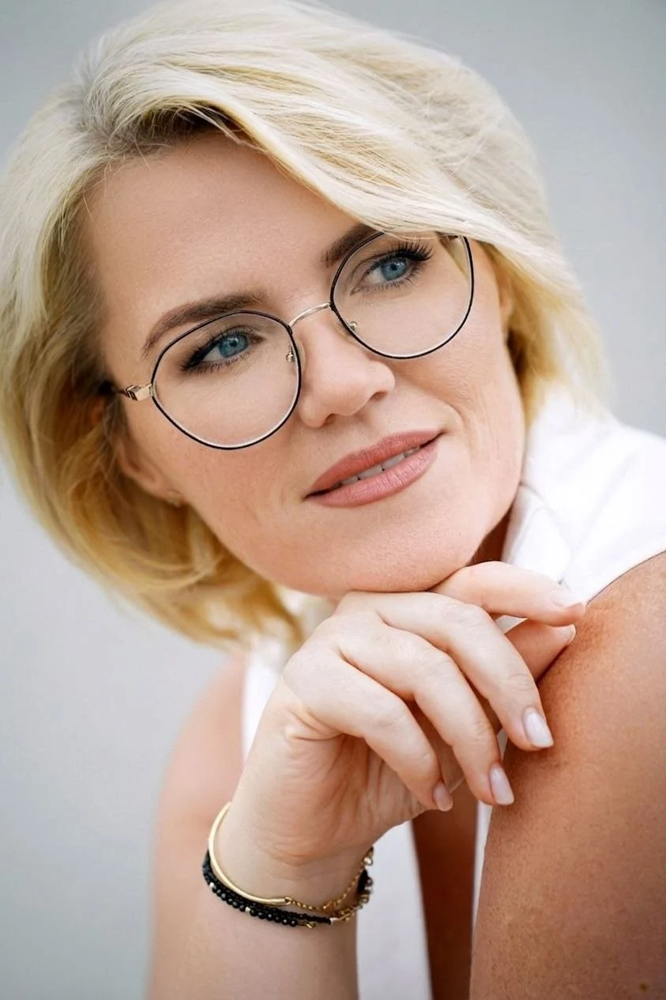

01
Семейная медиация
Развод, дети, алименты, раздел имущества, семейные конфликты.
Помогаю людям и бизнесу находить взаимовыгодные решения без длительных судебных разбирательств. Семейные, имущественные, наследственные, корпоративные и коммерческие споры.

Медиация позволяет найти решение, которое устроит все стороны, сохранив отношения, время и деньги.
Развод, дети, алименты, раздел имущества, семейные конфликты.
Конфликты между партнерами, участниками бизнеса и руководителями компаний.
Меня зовут Ирина Ратникова. Я профессиональный юрист и медиатор. Моя задача — не определить победителя, а помочь сторонам самостоятельно найти решение, которое устроит всех участников конфликта.
Медиация позволяет сохранить отношения, избежать многомесячных судебных процессов и существенно сократить расходы.
Анализируем ситуацию, определяем возможность проведения медиации.
Организуем конструктивный диалог, обсуждаем интересы каждой стороны.
Закрепляем достигнутые договоренности в письменном виде.
Конфликт урегулирован, стороны получают взаимовыгодное решение.
Большинство конфликтов удаётся решить за несколько встреч.
Все переговоры проходят без публичного разбирательства.
Особенно важно для семьи, бизнеса и наследственных вопросов.
Каждая ситуация индивидуальна, имена изменены, но факты реальны.
Суть: Отец ушел из семьи, когда сыну было 3 месяца. Спустя 30 лет, когда сын героически погиб в зоне СВО, «отец» попытался получить наследство и льготы.
Сложность: Ответчик строил защиту на лжи, пытаясь доказать «близкую духовную связь».
Результат: Суд признал «отца» недостойным наследником, лишив его прав на выплаты и льготы. Память бойца защищена.
Суть: ПАО «Россети Волга» установило публичный сервитут на участок, предложив компенсацию всего 38 000 рублей.
Сложность: Строительная техника зашла на участок без уведомления. На первом заседании судья заявила о косвенном конфликте интересов.
Результат: Суд взыскал 309 596 рублей соразмерной платы, 360 000 рублей расходов на экспертизу и обязал провести рекультивацию земель.
Суть: 18-летняя Ирина унаследовала квартиру вместе с долгами за ЖКУ на сумму более 1 миллиона рублей.
Сложность: Ресурсоснабжающие организации начали списывать деньги со счетов. Ирина хотела отказаться от наследства, но суд ей отказал.
Результат: Общую сумму задолженности снизили на 247 000 рублей. В январе 2026 года Ирина получила свидетельство о праве на наследство без долгов.
Суть: Артем, победивший онкологию, решил разделить имущество с бывшей супругой: кредитный автомобиль, земельный участок и бытовую технику.
Сложность: Жена демонстрировала резкое непринятие и эмоциональную реакцию.
Результат: Ирине — земельный участок, Артему — автомобиль и техника с незначительной выплатой компенсации. Медиативное соглашение утверждено нотариусом.
Реальные отзывы людей, которым я помогла найти решение.
«Спасибо тебе! Мы очень рады, что встретились с вами. Советую юридическую помощь — обращайтесь к Ирине Ратниковой. 2025 год — наша семья уже в собственной квартире. Спасибо Ирине в первую очередь!»
Термине Еганян Клиент«Ирина, мы благодарны Вам, что прошли этот путь к победе с нами! Спасибо, что помогли решить вопрос. Столкнувшись с такой ситуацией, я просто в шоке от халатности банков… их служба безопасности видимо не работает от слова "совсем".»
Мария Абкеримова Клиент«Ирина, спасибо Вам! Лучшая и юридическая, и человеческая поддержка 🙏 Очень грамотно и четко подошли к делу, рад, что доверился именно Вам 💯 Прекрасно подбираете пути решения в любой конфликтной ситуации.»
Сергей Белоконь Клиент«Сразу видно, что человек с огромным опытом! Не как многие "юристы", которые купили диплом и на каждый заданный вопрос лезут в интернет за ответом. И самое главное, Ирина Александровна не гонится за деньгами, для неё главное — помочь человеку. Спасибо Вам за то, что Вы делаете для людей.»
Андрей Хозяинов КлиентПолезные статьи, личный опыт и профессиональные заметки.
Развитие интернета и социальных сетей дало новый импульс в развитии профессиональной фотографии. Автор, правообладатель и собственник фотографии — кто есть кто? Рекомендации для авторов и заказчиков...
Читать далее →Социальные сети «диктуют стандарты», как мы должны выглядеть и жить. Не бойтесь быть собой, даже если кто-то не поймет. Следуйте своим путем и принимайте свои сильные и слабые стороны...
Читать далее →На днях завершила прочтение романа «Игра в бисер», в котором Г. Гессе виртуозно замаскировал «идеальную» модель манипуляции. Манипуляция — это тоже игра. Но чья это игра, и кто в ней побеждает?
Читать далее →Медиация — это добровольная процедура урегулирования спора при участии независимого медиатора.
Соглашение подписывается добровольно обеими сторонами и имеет юридическую силу в предусмотренных законом случаях.
Обычно от одной до нескольких встреч, в зависимости от сложности ситуации.
Расскажите о своей ситуации. Вместе определим, подходит ли медиация именно в вашем случае.
Записаться на консультациюЕсли у вас возник конфликт, который хотелось бы решить без длительного судебного процесса, оставьте заявку. Я свяжусь с вами в ближайшее время.
Самара
Работаю по всей России